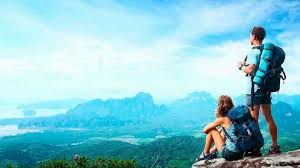

Consejos para viajar mejor
Viajar es una experiencia maravillosa, pero planificar bien tu viaje puede hacer la diferencia entre un viaje normal y una aventura inolvidable. Aquí encontrarás algunos consejos útiles que te ayudarán a disfrutar más tus viajes y evitar problemas comunes.

1. Planifica tu viaje con anticipación
Investiga el destino antes de viajar: clima, cultura, transporte y lugares turísticos. Esto te ayudará a organizar mejor tu tiempo y aprovechar más tu experiencia.
2. Lleva solo lo necesario
Empacar ligero facilita los desplazamientos. Lleva ropa cómoda, documentos importantes y artículos básicos que realmente vas a usar.
3. Prueba la gastronomía local
Uno de los mayores placeres de viajar es descubrir nuevos sabores. Atrévete a probar platos tradicionales del lugar que visites.
4. Respeta la cultura del lugar
Cada destino tiene sus propias costumbres y tradiciones. Respetarlas te permitirá tener una experiencia más auténtica y agradable.
5. Disfruta el momento
Toma fotos y guarda recuerdos, pero también vive el presente. Las mejores experiencias de viaje muchas veces no están planeadas.